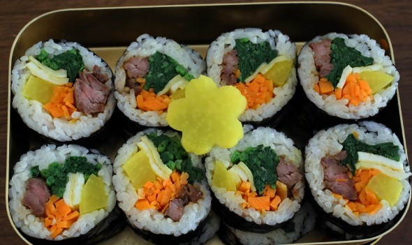

Kimbap

Description
Kimbap is a seaweed rice roll made of kim (a sheet of dried seaweed) and
bap (rice). So as long as you can roll some rice in kim, you can say:
“Check out the kimbap that I made!”
Ingredients
- 5 sheets of gim (seaweed paper), roasted slightly
- 4 cups cooked rice
- ½ pound beef skirt steak
- 1 large carrot, cut into matchsticks
- 5 strips of yellow pickled radish
-
8 to 10 ounces spinach (1 small bunch), blanched, rinsed in cold water,
and strained
- 3 eggs
- 3 garlic cloves
- 2 teaspoons soy sauce
- 1 tablespoon plus 1 teaspoon brown (or white) sugar
- 1½ teaspoon kosher salt
- 2½ tablespoons toasted sesame oil
- vegetable oil
Steps
-
Place freshly made rice in a large, shallow bowl. Gently mix in ½
teaspoon kosher salt and 2 teaspoons toasted sesame oil over top with a
rice scoop or a wooden spoon.
-
Let it cool down enough so it’s no longer steaming. Cover and set aside.
- etc.